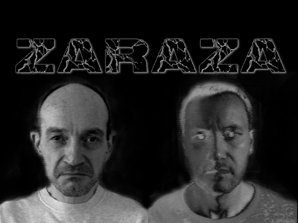
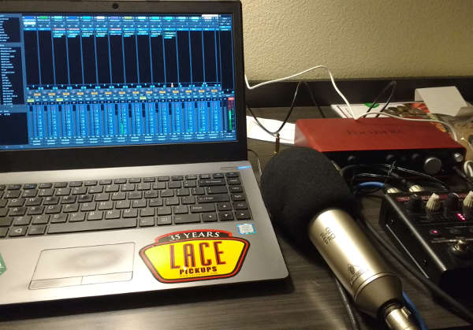

LMP Asks #23: An interview with Jacek from ZARAZA
This time we talk to Jacek from ZARAZA, one of the two members of this experimental/industrial doom/death/sludge metal band.

Where do you live and what do you do for a living?
I (Jacek) currently live in Ecuador, after immigrating here from Canada about 1.5 years ago. Originally I am Polish, immigrated to Canada in 1990 when I was 20.
I work in IT (obviously...hence the Linux usage). My band ZARAZA started in Montreal, Canada in 1993 as a collaboration between me and local Montreal experimental/industrial musician Brian Damage. We released our first album “Slavic Blasphemy” in 1997, second one “No Paradise to Lose”came in 2003 and then we disbanded in 2006.
Recently, in 2015 we decided to get back together and the result of this is our latest album “Spasms of Rebirth”, which came out in March of 2017.
Brian still lives in Montreal, I’m in Ecuador, we do our best to collaborate over the Internet.
What is your musical background?
All over the map. I grew up as a teenager in communist Poland and spent most of the 80s listening to the underground music of that time: punk, post-punk, industrial, alternative, thrash metal. Upon immigrating to Canada I got into all forms of underground extreme metal (death metal, doom metal, black metal, etc) and ZARAZA was formed to bring all these disparate influences and fuse them together.
Brian comes from a really experimental/industrial music background. His main band Phycus has been in active in Canada since late 1980s and he has been involved in numerous experimental electronic/industrial/noise projects throughout the last 30 years.
What is your history with Linux and how did you find transitioning to it for audio production?
Well, it came out of necessity. Our second album “No Paradise to Lose” was recorded on Windows, using Cakewalk SONAR back in the early 2000s, so I knew that platform and was very satisfied with it.
Around 10 years ago I ditched all Windows boxes and switched to Linux on all my PCs. First Ubuntu, the last 2-3 years purely on Fedora (once they got their QA together 3-4 releases ago and actually started being stable and usable for daily work). I like how up-to-date all the development packages are in Fedora for my day job and that is really the only OS I have in my house.
So I wanted to keep using what I have and not have to go out and spend hundreds of dollars on a Windows PC or a Mac, just so that I could use a DAW.
A few years ago, Linux was virtually unusable for any serious audio production. The gap in functionality and software selection between it and Windows/Mac was gigantic and cumbersome and user-unfriendly solutions like JACK didn’t really help.
But the arrival of Ardour, Calf Plugins, Guitarix, Hydrogen, etc in the last few years have narrowed that gap to the point where Linux is fully usable for serious audio production. It may still not have the same depth of software selection as the proprietary platforms, but it has enough of high quality offerings to make it possible.
There are still stability issues (I had Ardour+JACK occasionally freeze for 2-3 minutes in the middle of a recording session...seemingly totally randomly...without any indication as to why, as most CPUs were idle in htop). My biggest complaint is when I upgraded from one version of Fedora to another (which brought in a new Ardour in as well), all of a sudden my existing mixing projects would fail to open properly. Ardour would complain that it could not find the Calf 12 Band Equalizer plugin any more (even though it was there), so I lost all my EQ curves on existing mixes during an upgrade. Had to re-select the same plugin again and redo all the EQ-ing. That was really frustrating.
And of course, setting up your kernel for real-time usage is an interesting experience too. Went through a lot of Wikipedia entries (the one on Mixxx was especially useful) and that helped me on Fedora. That part of the workstation setup could definitely use some TLC. I like the realtime kernel package in Ubuntu Studio and I think other distros should have something simple like that as well, instead of playing around with realtime IRQ setup by hand, having to change GRUB settings, etc, etc.
But besides these few glitches, things went well. Hydrogen is an excellent drum machine (although the UI for creating your own drumkits definitely is not very intuitive), Ardour is a stunning DAW, Guitarix is a pretty decent guitar modeler and Calf plugins are world-class. I used many of these plugins in every mix and some of them (like Calf Pulsator) have made huge positive additions to my mixes, making them much more interesting.
I recall using the MDA Overdrive plugin on all the vocals too, in order to make them harsher, excellent plugin as well.
So huge kudos to the Ardour and Calf Plugins team, they have helped to push Linux ahead by light years compared to where it was just a few years ago.
I have not used Helm yet, but played with it and I think it will definitely show up on the next ZARAZA album. Excellent soft synth for the type of experimental/industrial sounds we like to use.
What is your typical workflow when making music?
Usually, I just plug into a simple project in Ardour, hook up Guitarix and Hydrogen into it and start playing with guitar riffs, etc. Once the songwriting process is finished, then totally focus on Ardour and just stay there all the time for mixing, recording, etc.
The DAW-oriented work flow is really where Linux needs to go. JACK may seem like a nice idea (sure, we all like Linux pipes), but it’s more of a hindrance than anything else. I would like everything to be available as LV2 plugins and just be able to work totally in a DAW. In my personal opinion, from a usability point of view, having competing sound systems on Linux (JACK vs PulseAudio) is just total confusion for a non-technical user. Most musicians who are not Linux experts would probably get totally lost.
I think all the real-time parts of JACK should get merged into PulseAudio, there should be only sound system on the OS. Ardour should run on top of that and everything should be easy.
Tell us a bit about your hardware set up!
On one hand simple, but with some tweaks due to issues I run into with Guitarix:
Guitar (ESP LTD F-200B with Lace Drop&Gain pickups, tuned to C#) → ISP Decimator II G String Noise Gate → Hotone Octo Compressor Pedal → Focusrite Scarlett 2i4 audio interface → System76 Lemur Laptop → Fedora (Ardour).
The reason for all the pedals before the audio interface is because the noise suppression system in Guitar is unfortunately very weak, especially for high gain sounds. It is nowhere near as good as something like an ISP Decimator. The noise suppression strip in Guitarix is virtually useless. Even if I maxed it all out, it was never as tight and quiet as the ISP Decimator, especially for percussive staccato metal riffing.
Even if I wanted to use the abGate plugin in Guitarix, you can only have one (another major Guitarix shortcoming...it limits you to one instance of a plugin). Most metal guitarists have two noise gates: one in front of the amp, one in the FX loop, just to make everything super tight. That is how the ISP Decimator II G String actually works, as it can integrate the output from a typical amp FX loop and provides both pre- and post- noise suppression.
So I used the ISP Decimator for pre- noise gate and then added abGate in Guitarix after the amp block to make it even tighter. It may seem extreme, but when your gain is maxed out on really heaving aggressive riffs, you need that level of noise suppression.
I also have a Behringer B-2 PRO condenser microphone, which I used for recording all the vocal demos. I actually recorded the vocals in a professional studio in Houston, Texas and I still used that microphone. I loved the tone it gave to my vocals on the demos and wanted the same thing on the final recording

What about the software?
I already mentioned most of it, but just to summarize:
- Ardour (DAW)
- Calf Plugins + MDA Plugins (mixing)
- Hydrogen (drum machine)
- Guitarix (guitar modeler)
- Audacity (final audio editing before mastering)
For the final master, I actually used the online mastering site LANDR, they came out pretty good. Better than my own final master I did just in Audacity, so I used the LANDR album masters (with Intensity Level = Low) for the final album release.
Unlike most metal albums, where everything gets brickwalled for maximum loudness, I like the dynamics in our music and preferred to preserve them.
I actually did a test master in LANDR with Intensity Level = High (i.e. maximum loudness) and did not like it at all. All the subtle details in our music (e.g. that snare that comes in at just the right time with some extra volume and smacks the listener on the head) just got flattened out and made everything seem lifeless. So I’m definitely not a fan of brickwalled masters and prefer more dynamics.
What music do you currently listen to?
Gadzillion of various underground artists in many different genres. Too many to mention.
Check out my Bandcamp profile, they’re all there.
Everything from death metal to sludge metal to crust punk to experimental/industrial to 1970s Ethiopian jazz to the atonal early works of Krzysztof Penderecki. There is amazing music in so many different genres and I do my best to discover as many of them as I can and not stay in a single genre...that gets boring pretty fast.
Why do you feel open source is important, and what for you is the most important aspect of Linux audio?
First, the obvious: economics.
Having moved to a developing country like Ecaudor, where the average salary can be from $300/month to $800/month, I do appreciate the options that free open source software can provide for musicians here. A DAW at $200-$300 may not seem like much for someone living in US or Europe, but for many people in developing countries that could be a whole month’s worth of salary! But thanks to what Linux already offers now, if they have a semi-decent laptop and a decent audio interface, they too can record and mix at a quality level comparable to musicians in developed Western countries.
Second, the issue of personal freedom, privacy and choice.
I have BIOS passwords on all my machines. All my drives are encrypted. I run SELinux in fully active mode. I prefer to install open source software only and avoid closed source (with whatever backdoors it has) as much as possible. I believe in personal privacy and the right to live our lives without constant digital surveillance from Big Brother (and there are now multiple Big Brothers out there, all aiming to intercept every part of your digital life somehow).
I grew up in a totalitarian communist state. As a child, I witnessed the martial law of 1981 in Poland, where we had police hour, curfew and armored troop transporters rolling in front of my windows at night. We had censorship, uncomfortable words that would get bleeped out on records (e.g. “Afghanistan” in a famous song by Polish punk legends Dezerter on their first album). Some bands, even well known mainstream ones, could get banned from radio for months if they refused to play a show to celebrate some visiting Soviet dignitaries.
After the fall of communism, we learned with terror that secret police like Stasi had files on half the population of Eastern Germany. Or Securitate in Romania had two-way microphones installed in EVERY phone in the country (and in ashtrays in restaurants), so they could remotely monitor every one’s personal life, even in their own home.
Hence, you can understand how stunned I am about the naivete of today’s population who do not seem to mind at all that a giant digital surveillance machine is monitoring their entire personal life: emails, cell phone calls, text messages, the works. It is quite possible that the NSA has files on 100% of the US population in some giant Hadoop cluster somewhere. What they do today dwarfs the manual amateurish efforts of the Stasi back during the communist days.
It is hard for me to understand people who say “it’s OK if the government monitors all my stuff, I have nothing to hide”. They give away their freedom and their right to privacy...and it’s a priceless gift and not one to give away. Maybe they all need to lose their freedom in order to finally appreciate what it is worth.
So I use open source to try to live my digital life with all the privacy I should have as a human being. No backdoors in my OS or in any software I use on a daily basis. No reporting of my keystrokes to some server somewhere.
Linux is not the only tool in this battle to preserve our freedom, but it is an important one. We all know Edward Snowden used Linux Tails for secure communication when doing his civic duty and informing about the illegal activities of the digital surveillance complex. He is a true American hero, I am hope within my lifetime I will see him return to his homeland and be recognized for who he is. I am sure 50 years from now there will be streets and parks named after him, just like after Rosa Parks or other heroes of the civil rights movement.
What do you feel is currently lacking in Linux audio?
More software choice, more soft synths. Definitely rethinking of the audio stack to make it easier to use, I think PulseAudio and JACK need to be rolled into one. Focusing on DAW-oriented workflow.
I really hope a common Snap or Flatpak-based Linux App Store will get created in the future. The likes of RedHat or OpenSuse should get together and make this happen. The creators of tools like Ardour or Helm should be able to publish it once in a central location and any Linux user, regardless of distro, should be able to get it.
The existence of PPAs in Ubuntu or Copr repos in Fedora is not a solution. It’s a symptom of a problem. The problem being that it is impossible to easily install the same software in different Linux distros, unless it’s manually packaged by the distro maintainers.
Compared with the ease of software installation on Android or iOS, this is a definite issue that should be solved by the Linux community.
At one point in time, Linux software repositories were much better alternatives than the old Windows way of downloading manually some InstallShield EXE from somewhere and installing it by hand. But the creation of app stores has leapfrogged past that and in my personal opinion Linux is lagging here. I think each distro can have a unique set of system libraries, config, base software repositories. But all commonly used desktop programs (like LibreOffice, GIMP, Ardour, Helm, etc) should be installable on all distros from a central Linux App Store, IMHO. Whether it is Snap, AppImage or Flatpak, I am not sure. Just pick one and go with it.
That is a big gap in usability compared to competing proprietary OS platforms.
What is your favourite FLOSS plugin?
Definitely all the Calf Plugins. World-class UI, world-class features, world-class sound. Everyone of them I tried was outstanding. As good as any commercial proprietary plugin I’ve seen.
What changes, if any, would you like to see within the Linux Audio community?
More focus on user friendliness. You still have to be pretty techie to do audio production on Linux. Compared to how easy it is to do it on a IPad, we have some gaps to close.
Guitarix definitely needs more TLC. Remove limit on one instance of a plugin, I should be able to put as many as I want, wherever in the audio chain I want. Enable dual engines, so I can run two amps with different sounds in parallel and blend them (or at least allow dual cabs via IRs in the convolver engine and allow blending those).
Work on better noise gates, before and after amp block (before cabinet emulation).
What advice would you give to a new Linux Audio user?
Be patient. It will take some time. But it is doable. Everyone who uses Linux for audio production moves it forward.
Many thanks, Jacek, for taking the time to do this interview! Be sure to check out ZARAZAs videos (edited in Kdenlive) for their latest album.